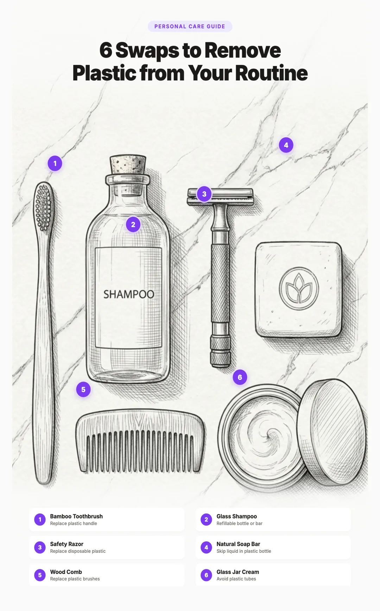

Microplastics in Cosmetics and Personal Care Products: What to Avoid and Safer Alternatives (2026)
Every day, the average person applies 9 to 15 personal care products to their body before leaving the house. Shampoo, toothpaste, moisturizer, sunscreen, deodorant, foundation. According to a 2023 study by the Plastic Soup Foundation, 87% of these products contain at least one type of microplastic ingredient. That means most people are rubbing, spreading, and rinsing synthetic plastic polymers directly onto their skin, hair, lips, and gums every single morning.
These are not just the visible plastic microbeads that made headlines a decade ago. Most of the plastic in your cosmetics is invisible: liquid polymers that create silky textures, film forming agents that make makeup last longer, and synthetic waxes that give lip products their shine. The Microbead Free Waters Act of 2015 banned solid microbeads in rinse off products, but it left the vast majority of plastic ingredients in personal care completely untouched.
The good news: switching to plastic free personal care is easier and more affordable than it was even two years ago. This guide breaks down exactly which products contain the most microplastics, how to read ingredient labels, and the best alternatives for every step of your routine.

What Are Microplastics in Cosmetics?
Microplastics in cosmetics come in three main forms, and understanding the differences matters because regulations only cover one of them.
Microbeads
Microbeads are tiny solid plastic spheres, typically 0.1 to 1 millimeter in diameter, added to products as exfoliants or abrasives. They are usually made from polyethylene (PE) or polypropylene (PP). These are the type most people picture when they hear "microplastics in cosmetics." Microbeads were the target of the 2015 US ban and similar bans in the UK, Canada, and the EU. However, the bans only apply to rinse off products, and enforcement has been inconsistent.
Liquid and Dissolved Polymers
This is the category most people miss entirely. Liquid polymers are synthetic plastic compounds that exist in solution or gel form. They include silicones (dimethicone, cyclomethicone), acrylates copolymers, polyurethane dispersions, and polyester resins. These ingredients serve as emulsifiers, texture enhancers, viscosity controllers, and skin conditioning agents. They are not covered by any microbead ban and are present in the vast majority of conventional personal care products.
Film Formers and Plastic Powders
Film forming polymers create a thin plastic coating on your skin or hair. They are what make waterproof mascara resistant to water, long wear foundation stay put, and hair spray hold your style. Common film formers include VP/VA copolymer, PVP (polyvinylpyrrolidone), acrylates/octylacrylamide copolymer, and nylon 12. Plastic powders like polymethyl methacrylate (PMMA) are used in foundations and setting powders for a "blurring" effect on pores and fine lines.
Which Products Contain the Most Microplastics?
Not all personal care products carry the same microplastic load. Here is how common product categories rank, based on research by the Beat the Microbead coalition and published ingredient analyses.
1. Nail Polish
Conventional nail polish is the single most plastic loaded category in personal care. Almost every formula contains acrylates copolymer, nitrocellulose, and the so called "toxic trio" of formaldehyde, toluene, and dibutyl phthalate. None of these picks are fully polymer free (nail polish needs film formers to harden), but the cleanest options strip the worst offenders.

SOPHi by Piggy Paint
Water based, odor free, safe for kids and pregnancy.
View →
Zoya Nail Polish
10 free formula, salon quality, hundreds of shades.
View →
Beauty's Sunday
Cruelty free, long lasting, clean ingredient list.
View →2. Fragrance and Perfume
Synthetic fragrance is one of the biggest microplastic and phthalate vectors in personal care. The word "fragrance" or "parfum" on a label is a regulatory loophole that hides hundreds of undisclosed ingredients, including phthalate plasticizers (which keep scent stable) and synthetic musks (persistent organic pollutants). The brands below disclose their ingredients.

Skylar
Hypoallergenic, full ingredient disclosure, vegan.
View →
Heretic Parfum
100% natural, no synthetic musks, glass bottle.
View →
Abel Odor
100% natural, B Corp certified, glass bottle.
View →
Henry Rose
EWG verified, full INCI disclosure.
View →3. Face Scrubs and Exfoliating Products
Despite the microbead ban, many exfoliating products still contain plastic polymers. While the visible plastic beads are mostly gone, manufacturers have replaced them with polyethylene powders, nylon fibers, and silicone microspheres that serve the same purpose. Some products labeled "natural exfoliant" still contain synthetic polymers as binding or texturizing agents elsewhere in their formula.

One Love Organics Botanical Cleanser
Gel to milk botanical exfoliating cleanser. EWG verified, glass bottle.
View →
Osea Seaglow Resurfacing Cleanser
Seaweed and fruit acid resurfacing scrub. Glass bottle, no microplastics.
View →
Tata Harper Regenerating Cleanser
Apricot kernel exfoliant. Glass bottle, all natural, MADE SAFE.
View →4. Foundation
Conventional foundations rely on dimethicone, nylon 12, PMMA, and acrylates crosspolymer for that pore filling, long wear finish. The cleanest alternatives use coconut oil, mineral pigments, and natural waxes.

Araza Coconut Cream Foundation
Coconut and mineral pigments. No synthetic polymers, family owned.
Shop Araza →
With Simplicity Organic Liquid Foundation
USDA Organic, glass bottle, plant oils and mineral pigments.
Shop With Simplicity →
Kjaer Weis Cream Foundation
Refillable metal compact, certified organic, medium to full coverage.
Shop Kjaer Weis →5. Mascara
Mascara is one of the hardest categories because waterproof formulas rely almost entirely on film forming polymers. Choose non waterproof formulas or brands that use natural waxes (beeswax, carnauba, candelilla) as the primary film former.

ILIA Limitless Lash Mascara
Lightweight lengthening formula. Cleaner conventional.
View →
W3LL PEOPLE Expressionist Mascara
EWG verified. Plant wax base, volumizing.
View →
Kjaer Weis Lengthening Mascara
Refillable metal compact, certified organic ingredients.
Shop Kjaer Weis →6. Sunscreen
Sunscreen is the hardest "Best" tier to fill because most UV filters require some kind of polymer or silicone to suspend evenly across skin. Even mineral sunscreens often coat their zinc oxide or titanium dioxide particles in dimethicone. The picks below are the cleanest formulations we have verified.

Thinkbaby Safe Sunscreen SPF 50+
20% non nano zinc oxide. EWG 1 rating, 80 minute water resistant.
View →
Pipette Mineral Sunscreen SPF 50
20% non nano zinc oxide with squalane. Hypoallergenic, fragrance free.
View →
Primally Pure Sun Cream SPF 30
Tallow based, ultra short ingredient list, high zinc concentration.
Shop Primally Pure →For families, see our non toxic baby and toddler products guide for kid specific sunscreen picks and our best mineral sunscreen guide for the long form comparison.
7. Eye Cream
The skin around your eyes is the thinnest on your face and the most likely to absorb anything you apply. Conventional eye creams are some of the most silicone heavy products out there, packed with dimethicone, cyclomethicone, and PEG compounds.

Honest Hazel Eye Gels
Niche but Pinterest popular. Glass jar, plant based.
View →
True Botanicals Renew Eye Cream
MADE SAFE certified. Glass packaging.
View →
Osea Eyes Wide Awake
Seaweed base, glass roller, no synthetic polymers.
View →8. Shampoo and Conditioner
Shampoos use polyquaternium compounds (synthetic polymers) for conditioning and detangling effects. Conditioners are even more reliant on plastic ingredients, using dimethicone, amodimethicone, and other silicones to create that smooth, slippery feeling. These ingredients coat each hair strand in a thin layer of plastic that does not fully wash off, building up over time.

Ethique Heali Kiwi Shampoo Bar
Compostable packaging, pH balanced, all hair types.
View →
Ethique Guardian Conditioner Bar
Compostable packaging. Normal to dry hair.
View →
HiBAR Maintain Shampoo
Salon quality bar, zero plastic packaging.
View →
Plaine Products Shampoo
Refillable aluminum bottles, no silicones.
View →
Plaine Products Conditioner
Refillable aluminum, no silicones.
View →9. Moisturizer
Dimethicone reigns supreme in conventional moisturizers because it creates a smooth, silky feel and fills in fine lines temporarily. It works by coating your skin in a thin layer of silicone polymer. The cleanest alternatives use natural oils, shea butter, and plant emollients that actually nourish.

Plaine Products Face Moisturizer
Refillable aluminum bottles, all skin types.
View →
Osea Atmosphere Protection Cream
Seaweed base, refillable jar, normal to combination.
View →
Tata Harper Water Lock Moisturizer
Lightweight gel cream. Glass jar, all natural.
View →
True Botanicals Chebula Cream
MADE SAFE certified. Extreme moisture for dry skin, glass jar.
View →10. Face Wash and Cleansers
Plain face wash is a separate beast from face scrubs and peels. There are no exfoliating beads to worry about, but conventional cleansers are still loaded with PEG compounds (in foaming formulas), carbomer (in gels), and dimethicone (in cream cleansers). Because cleansers contact your skin for less time than leave on products, the absorption risk is lower, but the wash off polymers still go straight into the wastewater stream.

Earth Harbor Sunshine Cleansing Mousse
Antioxidant foam cleanser. Vegan, glass bottle.
View →
Osmia Rose Clay Facial Soap
Handmade organic clay bar. Plastic free packaging, all skin types.
View →
Osea Nourishing Sea Cleanser
Seaweed based gel cleanser. Glass bottle, no synthetic polymers.
View →
True Botanicals Nourishing Cleanser
MADE SAFE certified. Glass bottle, dry to normal skin.
View →11. Toothpaste
Toothpaste is one of the most important products to get right because you use it twice a day, it contacts your mucous membranes directly, and you inevitably swallow small amounts. A 2019 study in Environmental Science and Pollution Research found that brushing with a polyethylene containing toothpaste released approximately 4,000 microplastic particles per brushing session.
- Polyethylene (PE): Used as an abrasive and for those colored specks. The original microbead controversy target.
- PEG compounds (PEG 8, PEG 32, etc.): Used as humectants and solvents. Synthetic polymers derived from petroleum.
- Carbomer: A crosslinked polyacrylic acid used as a thickener and gel former.
- Triclosan: Not a microplastic but a synthetic antibacterial that the FDA banned from hand soaps in 2016. Some toothpaste formulas still include it.

Weleda Salt Toothpaste
NATRUE certified, plant based, no synthetic polymers.
View →
Spry Kids Tooth Gel
Xylitol formula, safe to swallow, no SLS or artificial colors.
View →For mouthwash, look for brands that come in glass bottles or offer tablet form. Conventional mouthwashes frequently contain PEG compounds and carbomer. Georganics and Bite mouthwash bits are solid alternatives.
12. Lip Products
Lipstick, lip gloss, and lip balm deserve special attention because whatever you put on your lips, you inevitably ingest. Studies estimate that the average lipstick wearer consumes roughly 24 milligrams of product per day. If that product contains synthetic polymers like polybutene, polyethylene, or microcrystalline wax blended with synthetic plastics, you are eating plastic directly. A 2023 study in Science of the Total Environment detected polyethylene particles in 62% of lip products tested.

Henne Organics Luxury Lip Balm
Five clean ingredients in a glass jar.
View →
Henne Organics Luxury Lip Tint
Sheer natural color, moisturizing, glass jar.
View →
Araza Coconut Color Glossy Balm
Coconut oil base, mineral pigments, no synthetic polymers.
Shop Araza →
RMS Beauty Lip2Cheek
Coconut oil base, glass jar, lip and cheek tint.
View →
Kjaer Weis Lip Tint Sweetness
Refillable metal compact, certified organic ingredients.
Shop Kjaer Weis →13. Body Wash and Shower Gel
Conventional body washes rely on synthetic polymers for texture, lather, and that "silky" feel on skin. Common plastic ingredients include polyethylene glycol (PEG) compounds, carbomer (a crosslinked polyacrylic acid), and various acrylates copolymers. Products marketed as "moisturizing" are especially likely to contain dimethicone or other silicones.

Dr. Bronner's Pure Castile Bar
Eight ingredients, USDA Organic, zero plastic bottle.
View →
Chagrin Valley Oatmeal Honey Bar
Handmade organic goat milk soap. Plastic free packaging.
View →
Bathing Culture Mind and Body Wash
Refillable glass bottle. Biodegradable, sustainably sourced.
View →14. Body Lotion, Butter, and Oil
Conventional body lotion is essentially dimethicone with synthetic fragrance. The cleanest options use plant butters, tallow, or organic oils. Body lotion and oil both cover more skin surface than your face does, so they are worth getting right.

Earth Mama Body Butter
Pregnancy and nursing safe, glass jar.
View →
Primally Pure Body Oil
Organic, glass bottle, multiple scents.
Shop Primally Pure →
Osea Undaria Algae Body Oil
Flagship Osea product. Glass bottle, no synthetic polymers.
View →15. Deodorant
Conventional deodorants and antiperspirants frequently contain dimethicone, cyclomethicone (a volatile silicone), PEG compounds, and synthetic fragrance (which often contains phthalates). The switch to natural deodorant has become mainstream enough that there are now excellent options at every price point.

Each & Every Aluminum Free Deodorant
Plant based Dead Sea salt formula, unisex scents.
View →
Salt of the Earth Roll On
Natural mineral salts, no parabens, vegan and cruelty free.
View →
Wild The Full Monty Deodorant
Refillable case, bamboo pulp pods, Leaping Bunny and Vegan certified.
View →
Primally Pure Deodorant
Organic tallow and beeswax base. Baking soda free option, multiple scents.
Shop Primally Pure →How to Read Ingredient Labels
The biggest challenge with avoiding microplastics in personal care is that they hide behind complex chemical names. Here is your cheat sheet for the most common plastic ingredients and where they tend to appear.
Our Vetting Standard
Before we get into the picks, you deserve to know how we sort them. Almost every "clean beauty" roundup grades brands on a vibe instead of a rule, which is how the same article can call one product "plastic free" while greenlighting a competitor that contains dimethicone. We use two tiers, applied the same way to every category.
- Best (truly plastic free): Zero synthetic polymers and zero silicones in the formula. No "poly" prefixes, no ingredients ending in "cone" or "siloxane," no acrylates copolymers, no PEG compounds, no carbomer, no PVP, no nylon. Packaging is glass, metal, compostable paper, or refillable. These are our top recommendations.
- Cleaner conventional (Good): Significantly cleaner than mainstream competitors but not fully plastic free. May contain a small amount of one silicone or polymer that is hard to formulate around (sunscreens are the most common case). We always flag what is in the formula so you can decide.
If a product was previously listed in our "Best" tier but its current formulation contains dimethicone or another synthetic polymer, we move it down or remove it. We re check formulations periodically because brands reformulate without notice. If you spot a product in the wrong tier, email us at hello@plasticdetox.org and we will verify.
One honest caveat: ingredient transparency in the beauty industry is patchy. We rely on brand published INCI lists, EWG Skin Deep, and the Beat the Microbead database. For the brands flagged "verify per product" you should always cross check the specific item you are buying because lines can be mixed (a brand can sell one truly clean product alongside others that are not).
Skincare Without Plastic
Skincare is where the industry hides the most synthetic polymers, and ironically it is the highest search volume category for "non toxic" Pinterest traffic. From cleanser to eye cream, nearly every conventional product contains at least one polymer or silicone. Below is a step by step routine with vetted picks for every layer.
For face wash and exfoliant picks, see the Face Wash and Face Scrubs grids above. The rest of this section covers everything that follows the cleanse step.
Toners and Mists
Toners are often a hidden source of PEG compounds and synthetic fragrance. Stick with witch hazel, rose water, or floral hydrosols in glass.

Earth Harbor Mermaid Milk
Glass bottle, very short ingredient list, vegan.
View →
MARA Sea Vitamin Toner
Algae and aloe base. Glass bottle.
View →Serums
Most "vitamin C serum" formulas contain carbomer, dimethicone, or PEG to give them their gel texture. The cleanest serums are oil based or use plant gums (xanthan, sclerotium gum) instead.

Earth Harbor Marina Biome Serum
Hyaluronic acid in glass. Vegan, no synthetic fragrance.
View →
Three Ships Dew Drops Hyaluronic + Vitamin
Hyaluronic acid plus vitamin blend. Vegan, glass bottle.
View →
True Botanicals Pure Radiance Oil
MADE SAFE certified oil serum. Glass bottle.
View →Face Oils
A clean face oil has one to ten ingredients, all plant derived, and lives in a glass bottle. True Botanicals Pure Radiance Oil (in the Serums section above) is also a face oil and our top MADE SAFE pick.

Body Care
Body care is the most overlooked category in clean beauty roundups, even though it covers more skin surface than your face does. Conventional body lotion is essentially dimethicone with fragrance. Body wash is loaded with PEG compounds and acrylates. The good news: switching is easy and the picks are inexpensive.
Body Scrub
Skip anything with polyethylene microbeads. The gentlest exfoliants are sugar, salt, or coffee grounds in oil.

Unscented Sea Salt Body Scrub
Primally Pure. Sea salt and oil base in glass.
View →
Osea Salts of the Earth Scrub
Sea salt and seaweed in glass jar.
View →Hand Cream and Foot Cream
Both picks below are NATRUE certified or pregnancy safe and made with plant ingredients.

Makeup Alternatives
Conventional makeup is the most plastic intensive personal care category. Long wearing, blendable, smudge proof formulas traditionally rely on PMMA, nylon 12, dimethicone, and acrylates copolymers. The clean alternatives use mineral pigments, plant oils, and natural waxes. Below is a category by category breakdown.
Foundation, mascara, and lip products are covered above with cards. The rest of this section covers the makeup categories that did not make the chart.
Blush, Bronzer, and Highlighter
Powder formulas are usually cleaner than creams because creams need silicone for spreadability. RMS Lip2Cheek is also a multi use blush and is included in the Lip Products section above.

Eyeshadow and Brow
Powder eyeshadow tends to be cleaner than cream because cream formulas need silicone.

Plastic Free Tools: Razors and Toothbrushes
The tools you use every day are often 100% plastic by design. Disposable razors and conventional toothbrushes (even bamboo handled ones with nylon bristles) shed microplastics directly into your mouth, your skin, and the wastewater stream. Switching to all metal razors and fully compostable toothbrushes removes a daily source of plastic exposure.
Razors
Conventional cartridge razors are 95% plastic by weight and shed microplastics every time they touch water. A safety razor lasts a lifetime, replacement blades cost pennies, and there is no plastic anywhere in the system.

Merkur 34C Safety Razor
German made stainless steel, lasts a lifetime. Blades cost pennies.
View →
Edwin Jagger Safety Razor
Mild and forgiving shave. Handmade in Sheffield, England.
View →
Leaf Thorn Single Edge Razor
Pivoting head mimics a cartridge feel. All metal, easiest transition.
View →Toothbrushes
Bamboo handles only solve half the problem: most "bamboo" toothbrushes still use petroleum based nylon bristles that shed microplastics straight into your mouth. The picks below use boar hair (fully compostable) or castor bean derived bio nylon (still a polymer but plant based, not petroleum). For the long form comparison, see our bamboo toothbrush bristle guide.

PRIMALS Boar Bristle Bamboo
100% boar hair bristles, zero nylon. Fully compostable.
View →
SeaTurtle Plant Based Bamboo
Castor bean bristles on FSC bamboo. USDA Bio Preferred certified.
View →
Gaia Guy Boar Bristle Bamboo
Original boar bristle brand. 100% boar hair, no petrochemicals.
View →
SURI 2.0 Sustainable Electric
Aluminum body, repairable. Castor oil bristles, free head recycling.
View →Trusted Brands and Certifications
With greenwashing rampant in the personal care industry, third party certifications are your most reliable shortcut. Here are the certifications that actually mean something when it comes to microplastic content.
Certifications That Restrict Microplastics
- EWG Verified: The Environmental Working Group's verification requires products to meet strict ingredient standards. EWG Verified products must avoid over 2,500 ingredients of concern, including many synthetic polymers. Check their database at ewg.org/skindeep.
- COSMOS / ECOCERT: The European standard for organic and natural cosmetics. COSMOS certified products must derive at least 95% of their ingredients from natural sources and prohibit most synthetic polymers.
- Zero Plastic Inside: Created by the Plastic Soup Foundation, this certification specifically targets microplastics. Products bearing this logo have been verified to contain zero intentionally added plastic microingredients.
- USDA Organic: While designed for agriculture, this certification requires that 95% of ingredients be certified organic, which effectively eliminates most synthetic polymers.
- Cradle to Cradle Certified: Evaluates products on material health, circularity, clean air and climate, water and soil stewardship, and social fairness. Products at Gold level and above restrict most problematic synthetic chemicals.
Other Brands Worth Knowing
Beyond the eight in our Featured Brand Spotlight above, these brands are widely recommended in the low tox community. We have not done a full line audit of every product, so verify the specific INCI for whichever item you are buying.
- Dr. Bronner's: Simple, organic ingredient lists. Their castile soap line uses five to eight ingredients, all natural. Packaging is 100% post consumer recycled plastic or glass.
- HiBAR: Salon quality shampoo and conditioner bars without plastic packaging or synthetic polymer ingredients.
- Innersense: Salon quality hair line without silicones. Strong leave in and dry shampoo.
- Rahua: Amazon rainforest oil based hair care. Glass and aluminum packaging.
- Earth Harbor: Affordable, vegan, glass packaging. Strong serums and masks.
- Three Ships: Affordable Canadian clean brand with strong cleansers, serums, and tinted SPF.
- One Love Organics: EWG verified, glass packaging. Vitamin C serum is the standout.
- MARA Beauty: Algae oil based skincare in glass.
- Ursa Major: Unisex with EWG verified line. Strong "convert your partner" pick.
- Honest Hazel: Eye gels in glass jars, niche but Pinterest popular.
- Primally Pure: Tallow and beeswax base, glass jars, strong body care and dry shampoo.
- Earth Mama: Pregnancy and nursing safe formulations, glass packaging.
- Heretic, Abel, Henry Rose, Skylar: Transparent fragrance brands.
- Tenoverten, Côte: Cleanest nail polish formulas in the 8 to 10 free range.
Cleaner conventional brands worth knowing: Cocokind, Necessaire, Saie, ILIA, Kosas, Phlur, and Olive & June are all significantly cleaner than mainstream alternatives but contain at least one synthetic polymer or silicone in many of their products. Check the specific INCI before buying.
Quick Action Plan
You do not need to throw out every product in your bathroom tonight. Replace products as they run out, starting with the highest impact swaps first.
Week 1: The Big Three
- Switch your toothpaste. You use it twice a day and it goes directly into your mouth. Replace it with a clean natural option like Weleda Salt Toothpaste for adults or Spry Kids Tooth Gel for children.
- Replace your lip products. Whatever you put on your lips, you eat. Switch to a beeswax or shea butter based lip balm with no synthetic polymers.
- Download Beat the Microbead. Scan every product in your bathroom. You will be surprised by what you find.
Week 2 to 4: Daily Essentials
- Switch your body wash or soap. A simple bar soap like Dr. Bronner's eliminates both the plastic bottle and the synthetic polymers in one move.
- Replace your deodorant. Each & Every, Wild, or Primally Pure. Give yourself a few weeks for the transition period.
- Try a shampoo bar. Ethique or HiBAR. Your hair may take two to four weeks to adjust, but stick with it.
Month 2 and Beyond
- Upgrade your skincare. Replace moisturizer and sunscreen as they run out. This is the most challenging category, so take your time finding products you love.
- Tackle makeup. Start with foundation and mascara, the two highest plastic content items. Kjaer Weis and RMS Beauty are excellent starting points.
- Address hair styling products. This is the lowest priority since most styling products are used in small amounts, but eventually replace gels and sprays with natural alternatives.
Frequently Asked Questions
The Microbead Free Waters Act of 2015 banned plastic microbeads in rinse off cosmetic products like face scrubs and toothpaste in the United States. However, the ban does not cover leave on products like moisturizers, makeup, sunscreen, or other personal care items. Liquid polymers, film forming agents, and plastic powders used in these products remain completely legal and unregulated.
Check the ingredient list for polyethylene (PE), polypropylene (PP), polymethyl methacrylate (PMMA), nylon (polyamide), polyethylene terephthalate (PET), acrylates copolymer, acrylates crosspolymer, polyurethane, and any ingredient starting with "poly." Apps like Beat the Microbead by the Plastic Soup Foundation can scan product barcodes to identify plastic ingredients.
Solid microplastic particles larger than 100 nanometers generally cannot penetrate intact skin. However, liquid polymers and nanoplastics (smaller than 100 nanometers) can potentially cross the skin barrier. A 2022 study in Environment International found nanoplastic particles in human blood samples. Additionally, damaged or broken skin, mucous membranes (lips, gums), and areas around the eyes may allow greater absorption.
For cleaning teeth and removing plaque, what matters most is daily brushing for two minutes with a soft brush. Natural toothpastes free from microplastic polymers, SLS, and triclosan can clean effectively without exposing you to plastic ingredients. Look for plant based formulas with sea salt, silica, or xylitol, and check ingredient lists to avoid polyethylene, PEG compounds, and carbomer.
From a microplastic perspective, shampoo bars are generally much better. They eliminate plastic bottles entirely, rarely contain synthetic polymers, and often use simpler ingredient lists. A single shampoo bar typically replaces two to three bottles of liquid shampoo. Look for bars with short ingredient lists that avoid polyquaternium and other synthetic polymer conditioners.
The most reliable certifications for avoiding microplastics include EWG Verified (Environmental Working Group), COSMOS/ECOCERT (European organic cosmetics standard), USDA Organic, Zero Plastic Inside (by the Plastic Soup Foundation), and Cradle to Cradle Certified. These certifications either ban or heavily restrict synthetic polymers in their approved products.
Price is not a reliable indicator of microplastic content. Some luxury brands use just as many synthetic polymers as budget options. What matters is the ingredient list, not the price tag. Some affordable brands like Dr. Bronner's and Ethique are completely free of synthetic polymers, while certain high end brands rely heavily on silicones and film forming plastics for their smooth textures.
A 2021 study published in Marine Pollution Bulletin estimated that personal care products release approximately 3,800 tonnes of microplastics into European waterways each year. Globally, the number is estimated at over 10,000 tonnes annually. These particles are too small to be filtered by most wastewater treatment plants and end up in rivers, lakes, and oceans where they enter the food chain.
Related Articles
- Non Toxic Baby and Toddler Products Guide
Family crossover for sunscreen, body lotion, and lip balm picks safe for kids and pregnancy. - Microplastics in Indoor Air
Personal care is one layer of your daily exposure stack. Indoor air is another. - Best Mineral Sunscreen Guide
The long form comparison for our sunscreen picks above. - How to Avoid BPA and Phthalates in Everyday Products
Room by room guide to eliminating the most common endocrine disruptors from your home. - Reduce Microplastics in Cleaning Products
Switch to cleaning products that are free of synthetic polymers and harmful fragrances. - How to Start Reducing Plastic Exposure
A practical priority guide for reducing plastic in your daily routine.